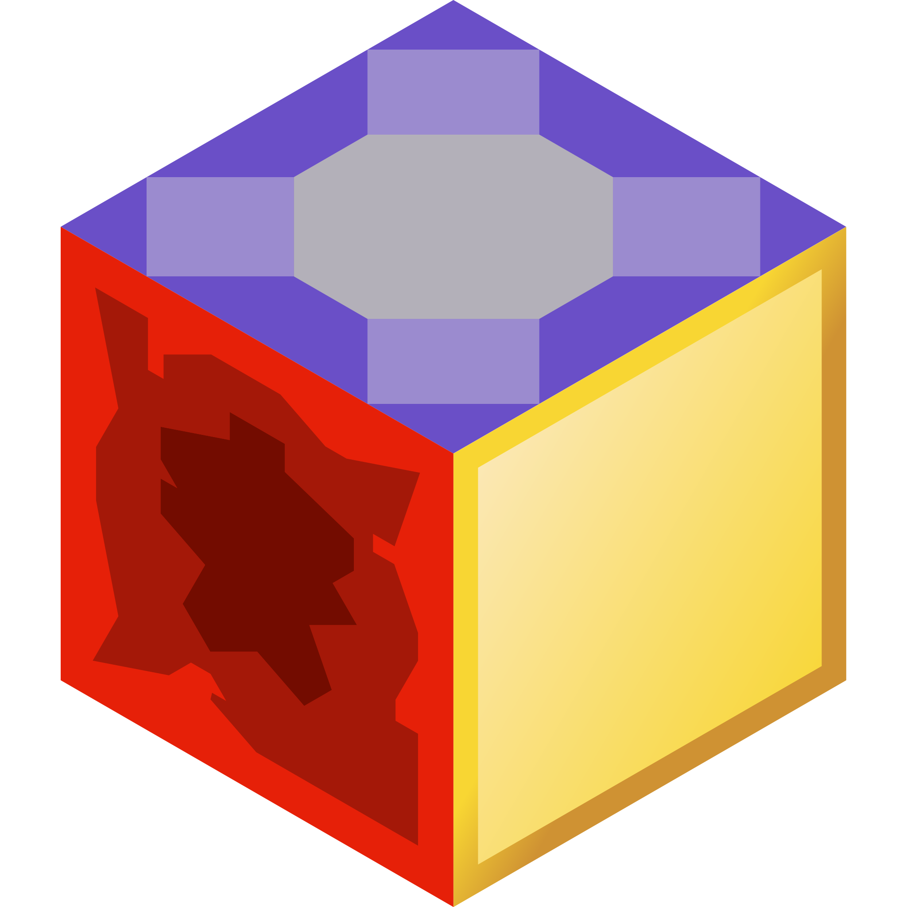
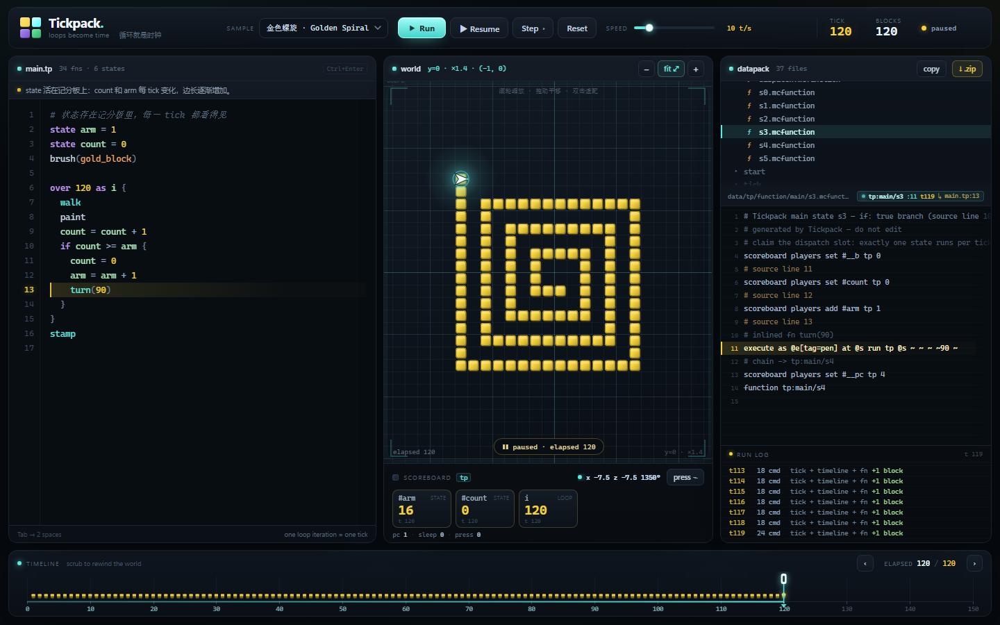

循环就是时钟
over 每迭代一次花一个 tick，循环变量就是记分板上的一个分数。

把 tick 当一等公民的语言 · 编译成 Minecraft 数据包 · 逐 tick 浏览器模拟器
你写下 over 8 as i { walk; paint }，按下运行，然后看着
循环变成时间：每个 tick 走一格，源码行、mcfunction 行和方块世界一起前进；
拖时间轴，世界会倒带。

over 每迭代一次花一个 tick，循环变量就是记分板上的一个分数。
模拟器直接执行编译出来的 mcfunction，不是另一套解释器；导出的 zip 能直接进 Minecraft 1.21。
每个 tick 存一份世界快照，拖动时间轴就能回放、观察、分享。
数据包会等你进世界，把画笔放在你脚下；/function tp:start、tp:brush/*、tp:start_at 都能用。